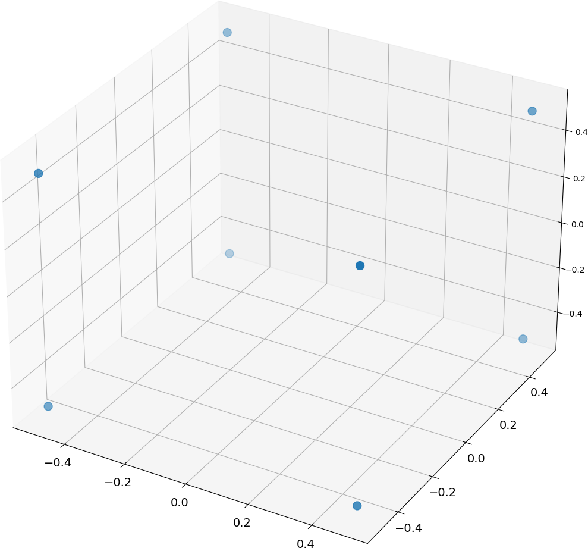
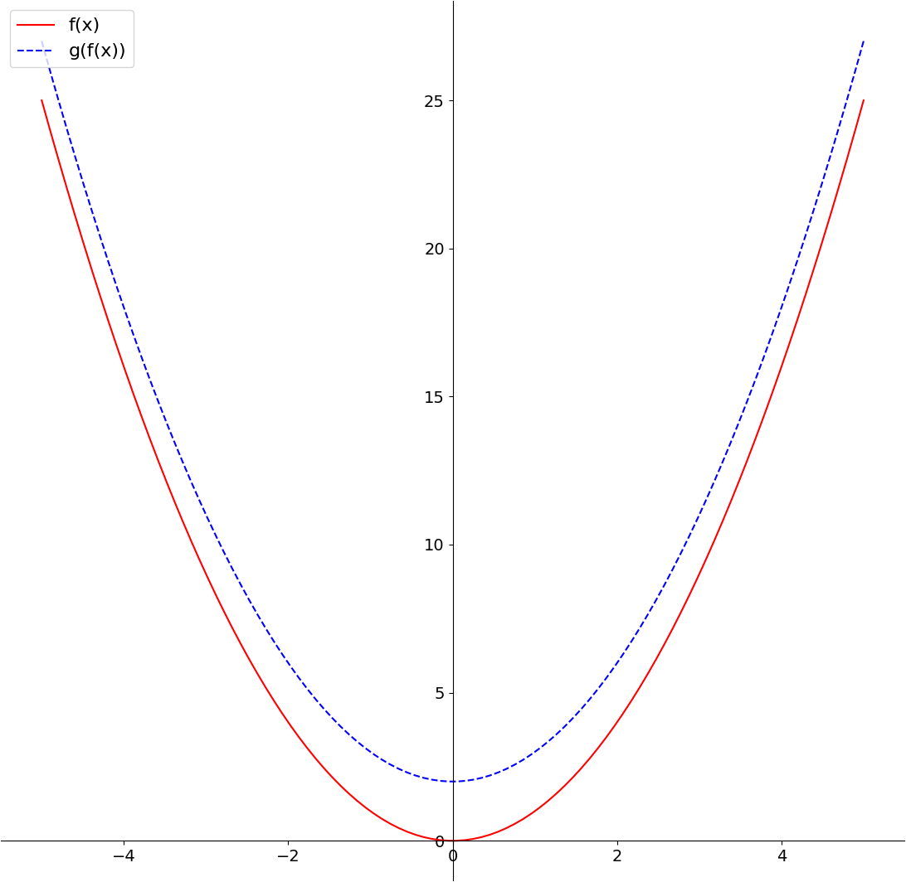
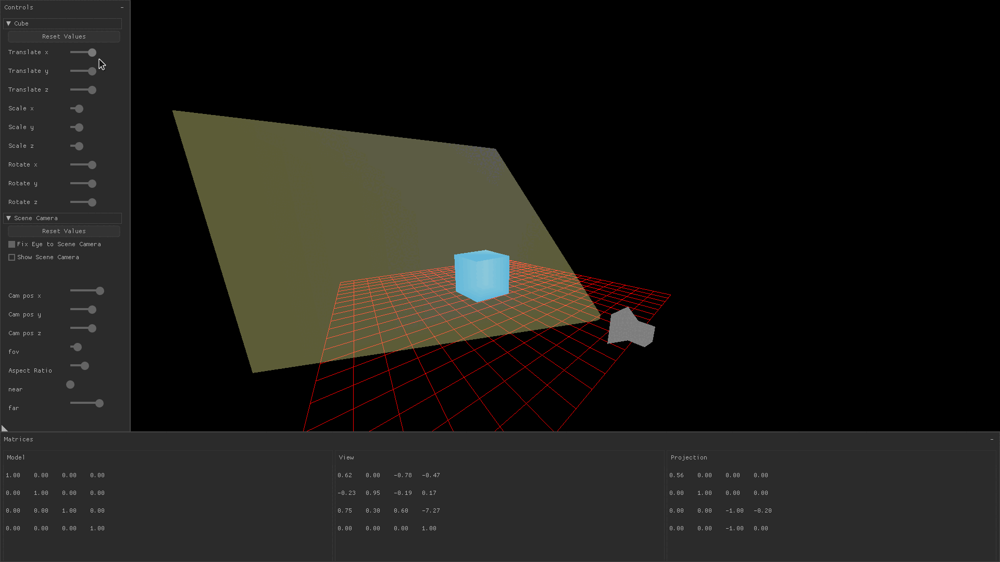
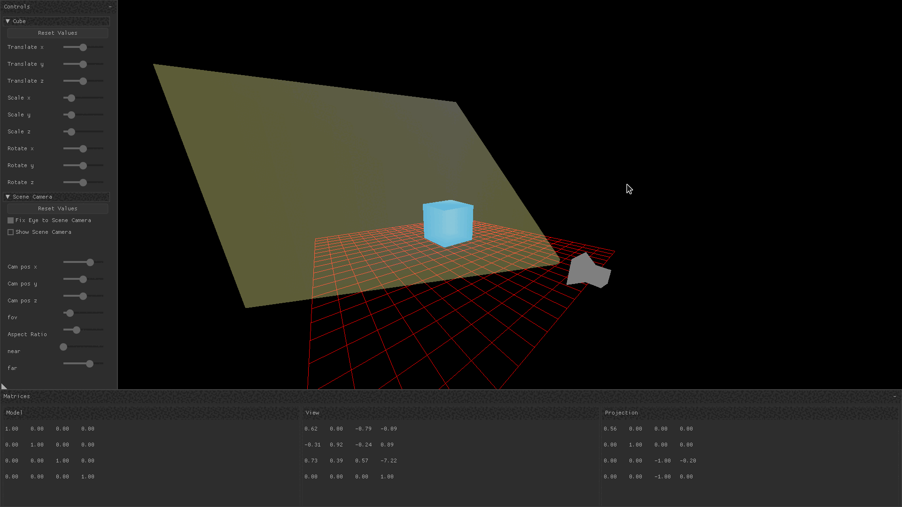
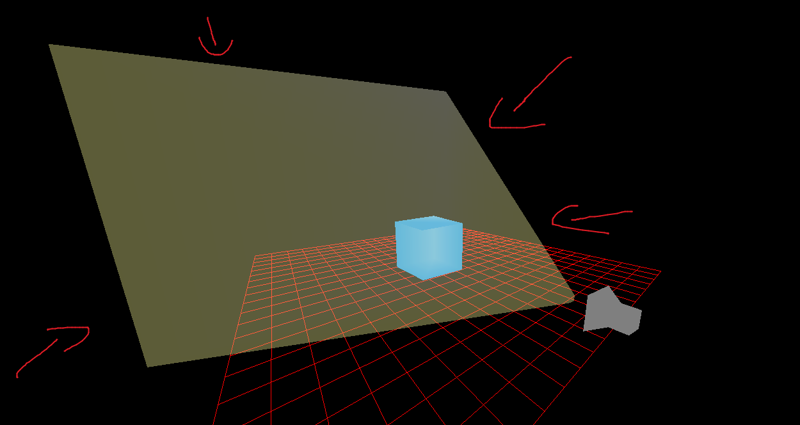

Introduction
When a 3D model is rendered using a modern graphics API, three things typically occur: 1) the programmer defines the vertices that define the model and passes them to the graphics API 2) a transform matrix is created in the application and sent to the GPU 3) the GPU calculates the screen position and color of each visible point on the object’s surface using the vertices and transform matrix
This blog post aims to build a conceptual understanding of what the transformation matrices are and explain computer hardware is doing during 3D rendering. It may be useful if you’re interested in getting started with low-level graphics programming or hand-rolling a 3D game engine.
Some familiarity with graphics APIs such as OpenGL and knowledge of linear algebra is helpful but not required to follow along.
The images in this post were produced by model-view-projection, an OpenGL ES application written in C99. It lets you fly a free roam camera around or tug on some on-screen controls, and you can see how they affect the values of the model, view, and projection matrices in real-time.
Defining Vertices
Before you can draw an object, you must tell the graphics API the locations of its vertices. Vertices are normalized floating point values between -1.0f and 1.0f that define points on a surface.
For example, the following define the position of a cube in 3D space:
static GLfloat cube_verts[] =
{
-0.5f, 0.5f, 0.5f, // 0 -- front
-0.5f, -0.5f, 0.5f, // 1
0.5f, 0.5f, 0.5f, // 2
0.5f, -0.5f, 0.5f, // 3
0.5f, 0.5f, -0.5f, // 4 -- back
0.5f, -0.5f, -0.5f, // 5
-0.5f, 0.5f, -0.5f, // 6
-0.5f, -0.5f, -0.5f, // 7
};
Any values outside -1.0f and 1.0f are discarded because these points are supposed to be normalized. They serve to describe the location of each vertex relative to other vertices on the model, but give no context about their location in the world.
These floating points are bound to objects in the graphics API and are stored in GPU memory. After the models are defined in terms of vertices, the graphics API maps the object to screen space through a series of matrix transforms.
Transform Matrices Act Like Functions
A transform matrix is a mathematical construct that is used to describe how a point or a vector in one coordinate system is mapped to another coordinate system. Graphics APIs use these in order to map points on the surfaces of models in order to the 2D screen coordinates you see on your monitor. We can build a conceptual understanding of what they are by comparing them to polynomial functions.
Consider the functions f(x) = x^2 and g(x) = x + 2. If we apply these in sequence, we obtain a composite function that maps each member of the set of real numbers to a single point on a line.

Matrix transformations represent functions that map one point in space to another point in space.
As such, when you see a matrix transformation like this:
⎡2 0 0 0⎤
⎢0 2 0 0⎥
⎢0 0 2 0⎥
⎣0 0 0 1⎦You should be thinking of it as serving the same purpose of a polynomial function f(x). This particular matrix scales up any vector in 3D space to make it twice as large and is analogous to f(x) = 2x.
And when you see matrix multiplication like this:
⎡1 0 0 0⎤ ⎡2 0 0 0⎤
⎢0 1 0 0⎥ * ⎢0 2 0 0⎥
⎢0 0 1 0⎥ ⎢0 0 2 0⎥
⎣0 0 0 1⎦ ⎣0 0 0 1⎦You should think of it as the composition f(g(x)). The first function in this sequence is the identity matrix, which leaves any input unchanged and is analogous to f(x) = x.
If linear algebra is new to you, you might want to check out Khan Academy to get a feel for the basics. If you’re not put off by dense reading material, I think Linear Algebra Done Right gives very clear and thorough explanations of the material in a more logical order than the subject is usually tought.
Model Matrix
Transforming a drawn object by translating it, scaling it, or rotating it is accomplished by changing variables which are later passed to a function that produces the model matrix. You might notice in the image below that changing the translation, scaling, and rotation sliders causes the model matrix’s values to change.

In the demo application, values for translation, scaling, and rotation in the x, y, and z directions are stored in a global variable.
struct orientation
{
// translation
float tx; float ty; float tz;
// scaling
float sx; float sy; float sz;
// rotation
float rx; float ry; float rz;
};
...
static struct orientation cube_transform;Eventually, these get wired up to the UI with a slider.
nk_layout_row_dynamic(ctx, 32, 2);
nk_label(ctx, "Scale x", NK_TEXT_ALIGN_LEFT | NK_TEXT_ALIGN_MIDDLE);
nk_slider_float(ctx, 0, &cube_transform.sx, 5.0f, 0.01f);The vector and matrix math used in the application uses Handmade Math, which supports matrix and vector multiplication.
View Matrix
A view matrix in 3D rendering is a mathematical representation of the position and orientation of the virtual camera in the 3D scene. It defines the position and orientation of the camera in relation to the 3D world, and is used in conjunction with the model and projection matrices to transform the vertices of an object into the 2D screen space of the rendering engine. This allows the object to be accurately rendered on the screen from the perspective of the virtual camera.
Changing the 3D position of the camera (sometimes referred to as the “eye”), or changing the direction the camera is looking (sometimes referred to as the “center”) is done by modifying 3D vectors which are parameters to the function that build the view matrix. In HandmadeMath, this is HMM_LookAt:
COVERAGE(HMM_LookAt, 1)
HMM_INLINE hmm_mat4 HMM_PREFIX(LookAt)(hmm_vec3 Eye, hmm_vec3 Center, hmm_vec3 Up)
{
ASSERT_COVERED(HMM_LookAt);
hmm_mat4 Result;
hmm_vec3 F = HMM_PREFIX(NormalizeVec3)(HMM_PREFIX(SubtractVec3)(Center, Eye));
hmm_vec3 S = HMM_PREFIX(NormalizeVec3)(HMM_PREFIX(Cross)(F, Up));
hmm_vec3 U = HMM_PREFIX(Cross)(S, F);
Result.Elements[0][0] = S.X;
Result.Elements[0][1] = U.X;
Result.Elements[0][2] = -F.X;
Result.Elements[0][3] = 0.0f;
Result.Elements[1][0] = S.Y;
Result.Elements[1][1] = U.Y;
Result.Elements[1][2] = -F.Y;
Result.Elements[1][3] = 0.0f;
Result.Elements[2][0] = S.Z;
Result.Elements[2][1] = U.Z;
Result.Elements[2][2] = -F.Z;
Result.Elements[2][3] = 0.0f;
Result.Elements[3][0] = -HMM_PREFIX(DotVec3)(S, Eye);
Result.Elements[3][1] = -HMM_PREFIX(DotVec3)(U, Eye);
Result.Elements[3][2] = HMM_PREFIX(DotVec3)(F, Eye);
Result.Elements[3][3] = 1.0f;
return (Result);
}In the gif below, the free roam camera is implemented by changing the camera’s position in response to keyboard and mouse input. You can observe that when the camera pans around the cube, only the view transform is changing.

Projection Matrix
The view matrix defines the location of the observer and where they are looking, but that’s not enough to convert their line of sight to a 2D image. You also need to know the angle of how far they can see into their periphery, how close an object can come to their nose before it drops out of sight, and how far into the horizon they can see.
These are all described by the projection matrix. In many graphics libraries you specify a field of view, distance to a near plane, and distance to a far plane, and the graphics library will use these to draw a frustum pointing from the camera’s eye to the location that it’s looking.
“Frustum” is a Latin word meaning “a removed slice”. In graphics parlance, it is a 3D shape that is aligned with the oberserver’s eye and serves to capture a portion of 3D world space which will be rendered to the screen. That is, anything that is inside the current frustum may be drawn, but anything outside of it will not.
You’ll often see them shown as a square shape, such as the yellow frustum in the image below, but they can have different shapes as well.

Drawing the scene
To form the final matrix transformation that will determine what is drawn to the screen, the model, view, and projection matrices are typically multiplied together in the application code, which means those calculations are being done by the CPU. If you go digging through math libraries, you’ll see they often conditionally use instruction set extensions when the user’s hardware supports them to calculate the transformation more quickly and efficiently.
The final model-view-projection matrix constitutes a function that is universally applied to all vertices on a model. Across all models in any given scene there are tons of vertices, so doing all this work serially on the CPU would be extremely slow. Instead, graphics cards contain hardware-level acceleration for highly parallelized matrix multiplication.
The programmer utilizes it by creating a shader program, such as the one below, that sits in GPU memory and is executed on the GPU every frame.
static const char
frustum_vert_shader[] =
"precision mediump float;"
"uniform mat4 mvp;"
"attribute vec4 a_position;"
"attribute vec4 a_color;"
"varying vec4 v_color;"
"void main()"
"{"
"gl_Position = mvp * a_position;"
"v_color = a_color;"
"}";Hope this helps somebody!